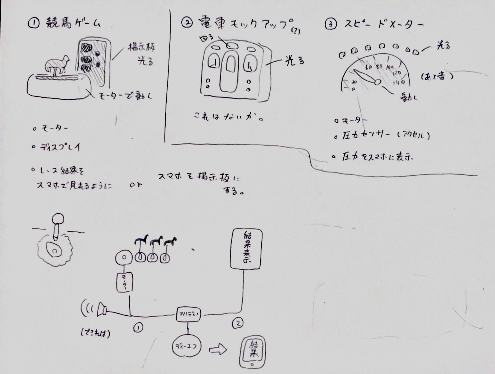
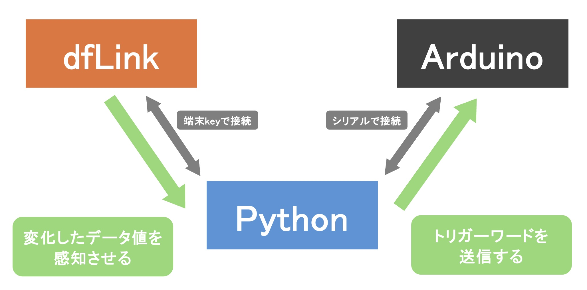
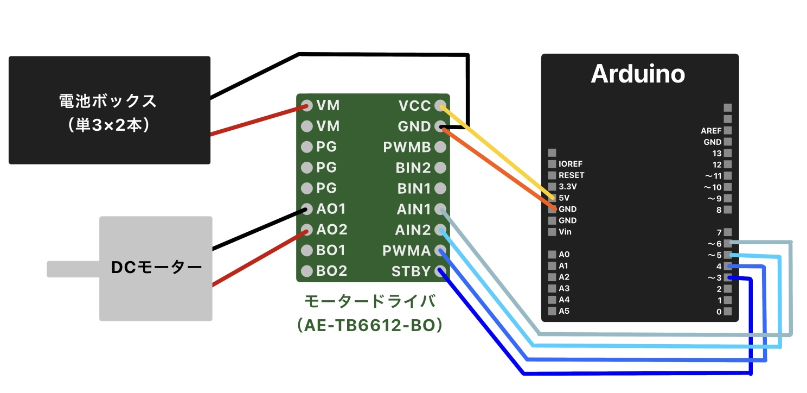
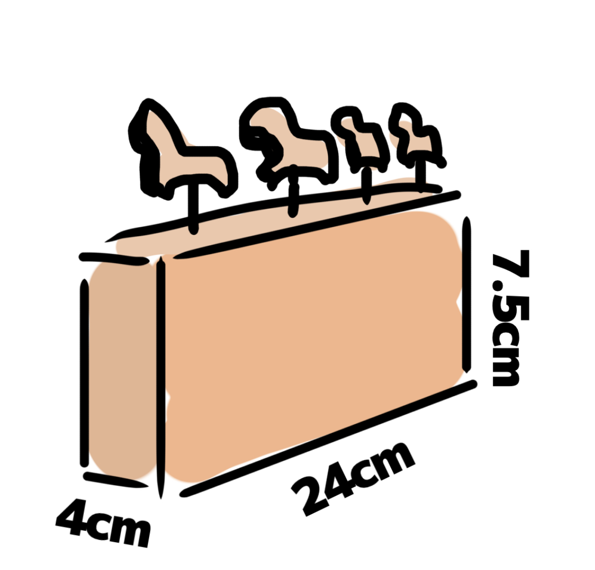

スケッチ＆概要

今回は①競馬ゲームを制作することにしました。
ミニサイズでも競馬の魅力を感じられる作品を目標に、全力で制作していきます！
今回は①競馬ゲームを制作することにしました。
ミニサイズでも競馬の魅力を感じられる作品を目標に、全力で制作していきます！
プロセスメモ
■：考えないといけないことや疑問など ●：具体的にやること →：やったこと
■ 作品の詳細を決める。
→ モーターとギアを使って競走馬を動かす本体と、PCに映す着順掲示板を制作する。
● 名前を決める。
→ 数分の長考の結果「
Python＆IoT
■ 着順掲示板をどのように再現するか考える。
→
→ 文字の色や配置を工夫することでかなりリアルなものができた！

● よりリアルに文字を表示させる。
→ 表示するタイミングをずらしたり明滅させることでかなりリアルになった！
● 音をつける。
→
■ IoTをどのように組み込むか考える。
→ QRコードを読み取ることでスタートできるようにする。
● dfLinkを使ったQRコードのシステムを動作に組み込む。
→ 端末keyでPythonと連携させ、サーバーのデータ値の変化を読み取ってもらうようにした。 → 残念ながらうまく動作しなかった。（
● QRコードの読み取りでPygameの動作を開始できるようにがんばる。
→ dfLInkからのデータを
Arduino＆回路
■ ArduinoとPythonをうまく接続できるのか？
● Lチカで代用しながら連携できるか確かめる。
→ Pythonの方で
まとめるとこのような流れになります。

■ モーターを動かす回路を組む。
● 購入する部品をリストアップする。
→ DCモーター、モータードライバ（
● モータードライバを経由してDCモーターを動かす。
→ 悲しいことにまったく動作しない。（DCモーターの不良ではなさそう...）
→ モータードライバの電源電圧や回路も確認したが
● 改めて回路を組む。
→ 下図の回路で無事にDCモーターが動作した！

● 本体の歯車とつなげて動作するかテストする。
→ うまく動作しなかった。どうやら始動する際の
● 電池を増やしてモーターが始動するか試してみる。
→ PWMAの値を調整して電池を４本まで増やしたが動かないので、モーターを
→ 低速ながら単三電池２本でも始動した！うれしい！
● テスト中に電池が異常に発熱してしまったので原因を探る。
→ DCモーターが動作していないのにも関わらず電気が流れていたことが原因だと思われる。
→ 安全のため動作時以外はスタンバイモードをオフに設定し、電池ボックスもスイッチ付きのものに変更した。
本体
■ 本体をどのように制作するか考える。
→ 外側の箱はレーザーカットでMDFを加工、歯車などは3Dプリンターで出力する。
● サイズ感を決める。
→ 下図のサイズ感をもとに製作する。

● 歯車をスケッチする。
→ FusionのSuperGearアドオンでベースを設計し、カム部分をスケッチで追加した。
→ 周辺パーツと一緒に試作品をプリント。問題なく動くので量産する。

● レーザーカットするデータを作って組み立てる。
→ 上述したものと近いサイズ感で作成したが、歯車どうしの間隔が空きすぎてしまった。
→ 横幅を2cmほど小さくして再度組み立てた。かなりいい感じ！

● カム部分の従動節が干渉してうまく回らない問題をなんとかする。
→ 従動節が穴のサイズに対してやや小さくずれてしまうのが原因だった。
→ 従動節を安定させるサポートパーツを取り付けることでスムーズに動いた！

■ 競走馬はなにで作る？
→ できれば3Dプリントで立体的に作る！
→ 時間があまりなさそうなので、簡易的にイラストを印刷して貼ってみる。

→ 意外とかわいいのでこれでもいいか...の気持ちになっている。